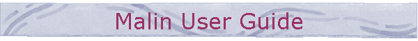

|
 |
|
InstallationMalin comes with a standard installation utility: execute Setup.exe and let you guide by the installation wizard. Basically you only have to determine the directory where the program files will be copied to. To remove Malin from your system use the Microsoft Windows 98 remove utility: Start - Settings - Control Panel - Add/Remove Programs. This ensures that the tiny little entry in your system registration is also deleted. FilesProgram Files These files are located in the directory chosen during setup.
Shared Dynamic Libraries The dynamic libraries are as always stored in the Windows system directory. They are not deleted by the remove utility.
Players The player files have the extension ap and are stored in the subdirectory Player. Games The game files have the extension ag and are stored in the subdirectory Game. User Guide The HTML files are stored in the subdirectory UserGuide.
|